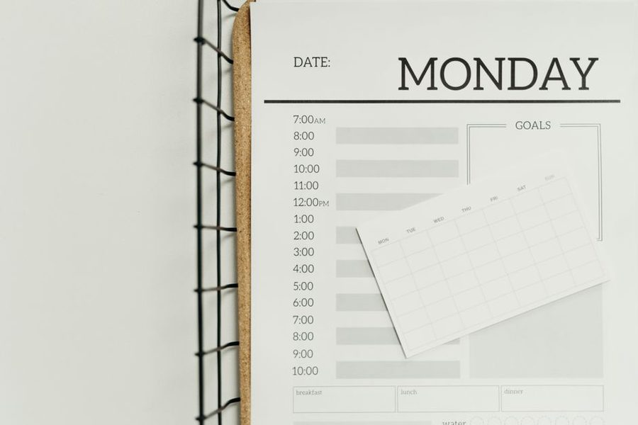

Journal / Planning
Task lists that survive Tuesday
Most lists are written on a good day for a good day. Then Tuesday arrives with a broken deploy and the list becomes decoration.

In short
- Three ranked items a day, plus a floor for bad days.
- Size tasks small/medium/large instead of guessing minutes.
- Weekly: delete anything carried over more than twice.
The optimism problem
A list written on Sunday evening assumes a Tuesday with no interruptions, full energy and accurate estimates. None of those hold. When reality removes two hours, the list does not adapt — it simply becomes wrong, and a wrong list is worse than none, because it teaches you to ignore your own plans.
The fix is not better estimates. People have been bad at estimating for as long as there have been deadlines, and no notation solves it. The fix is writing lists that already assume the day will be smaller than you hoped.
Three items, ranked, with a floor
Cap the day at three real items and rank them. The ranking is the whole trick: when the day shrinks, you do not renegotiate, you drop from the bottom. Without a rank, a shrinking day turns into a debate with yourself, and the debate always picks the easiest survivor.
Add a floor — the one thing that must be true by evening even in a disaster. It is often small: send the file, answer the client, push the fix. Naming it removes the worst version of a bad day, the one where a great deal happened and the single thing that mattered did not.
Everything else goes on a separate page you are allowed to ignore. Calling it "someday" is fine. Mixing it into the daily list is not; a list of eleven things has no rank in practice, only a top and a fog.
Estimating by size, not by clock
Rather than guessing minutes, tag each item small, medium or large — under half an hour, under half a day, more than that. Sizes are easier to get right and they force a useful decision: a large item on a Tuesday means the day holds one thing, not three.
Anything that stays large for two weeks is not a task, it is a project pretending to be one. Split it until the first piece is small, and put only that piece on the list. The habit of splitting is worth more than any app.
Reviewing without ceremony
Once a week, spend fifteen minutes on three questions. What did I carry over more than twice? What did I finish that never made it onto a list? What is on the someday page that I now know I will never do?
Delete generously on the third. A list you trust is short and mostly true; a list you do not trust becomes a museum, and museums get replaced by a brand-new system every few months.
Delete generously on the third question. A list you trust is short and mostly true; a list you do not trust is long, and long lists get replaced by a brand-new system every few months, which is the most expensive form of procrastination there is.
Where the list lives
The medium matters less than the constraint, but it does matter. A list on the same screen as the work competes with the work; a list on paper beside the keyboard is glanced at and forgotten again in one second. Whatever you choose, it should be readable without unlocking, searching or clicking.
Keep exactly one list. The most reliable way to stop trusting your own planning is to run a work list, a personal list, a chat thread with yourself and a folder of sticky notes, then spend Monday reconciling them. Reconciliation is not planning; it is the tax you pay for having four systems.
And write the list in the same place every day. Habits attach to locations far more readily than to intentions, which is why the people who keep lists longest are usually the ones with an unremarkable notebook that never moves off the desk.
The carry-over test
The single most informative thing on a list is an item that has been rewritten four times. It is not a task you are lazy about; it is a task that is mis-specified, blocked, or not actually yours.
Run it through three questions before rewriting it a fifth time. Is the first physical step obvious? If not, the item is a project and needs splitting. Is it waiting on someone? If so, it belongs on a short waiting-list with a date and a name, not on today. Would anything bad happen if it never got done? If nothing would, delete it and notice how little the deletion costs.
Most carried-over items fail the first question. "Sort out the invoice situation" has no first step; "list the four unpaid invoices in a message to accounts" has one, and it usually turns out to take eleven minutes.
Ranking is a promise, not a preference
Ranking three items only works if the rank binds when the day shrinks. The moment you allow yourself to reorder at two in the afternoon because the third item is more appealing, the rank stops being information and becomes decoration.
There is one legitimate reason to reorder: new information that changes the stakes — the client moved a deadline, the deploy broke, someone is blocked on you. When that happens, say so explicitly on the sheet. A one-word margin note ("deploy") beside the reordering keeps the record honest, and after a month it shows how often the day was genuinely disrupted versus how often it was renegotiated.
For most people the honest count is illuminating: perhaps one day in five is genuinely disrupted, and the other reorderings were preference wearing a disruption costume.
The Thursday letter
One short piece a week — usually a method someone on the desk tried and either kept or dropped. No attachments, no course, no schedule creep.
Also on the desk

Meetings that earn their slot
Working hours

The real cost of switching tabs
Attention

Planning a week in thirty minutes
Planning